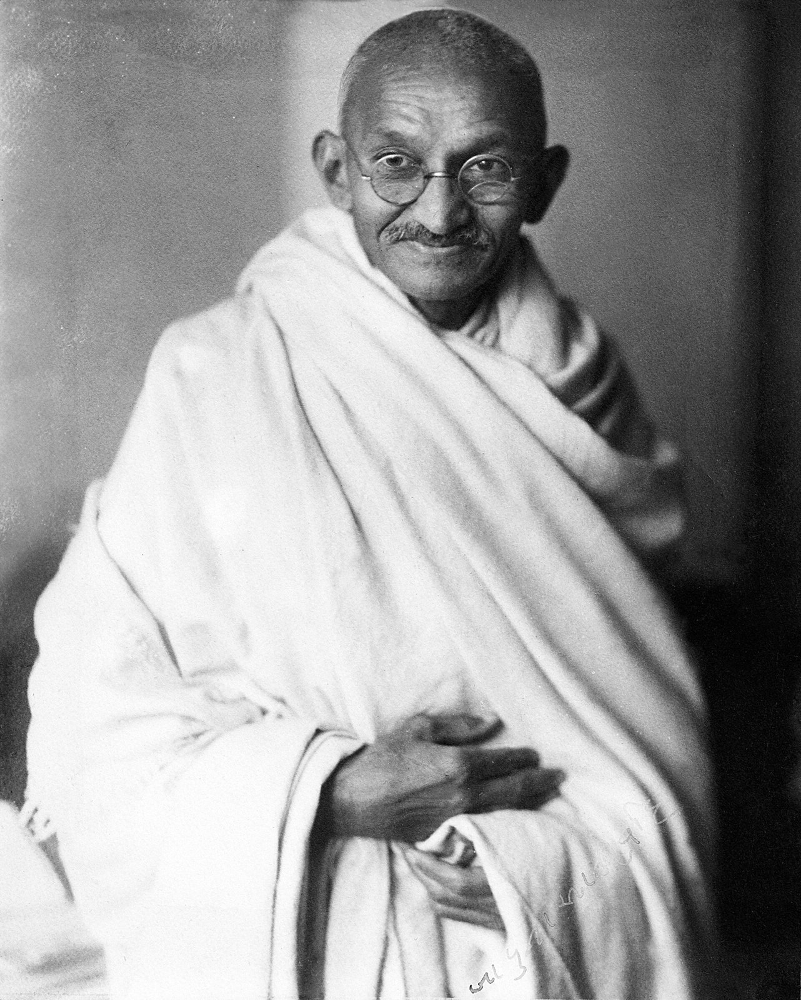
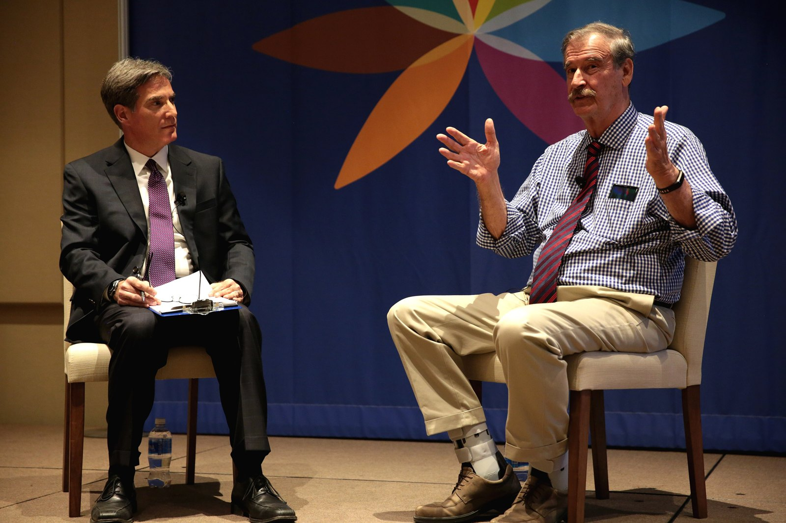

OKpolítico
OKpolíticoCuriosidades
Datos poco conocidos y el contraste en la vida de Nelson Mandela
Revisamos facetas poco divulgadas sobre Nelson Mandela: desde su etapa en la guerrilla y su afición al boxeo, hasta los señalamientos de organismos como Amnistía Internacional sobr
30 de octubre de 2026Curiosidades poco conocidas de Felipe Calderón, ex presidente de México
Este short presenta cuatro datos poco conocidos de Felipe Calderón, desde su victoria electoral ajustada hasta su paso por la política municipal, y contrasta la narrativa oficial d
29 de octubre de 2026
4 curiosidades sobre Mahatma Gandhi que (casi) nadie conoce
Repasamos cuatro datos verificados sobre la vida, las decisiones y las polémicas documentadas de Mahatma Gandhi, desde sus inicios hasta su legado histórico.
27 de octubre de 2026
4 datos y curiosidades poco conocidos sobre el expresidente Vicente Fox
Un recorrido por datos documentados y poco conocidos sobre la vida de Vicente Fox, desde su espionaje por parte de la DFS hasta la reserva de su evolución patrimonial tras dejar la
26 de octubre de 2026Curiosidades documentadas y poco conocidas sobre la vida de José María Morelos
Revisión documental de episodios biográficos verificados de José María Morelos y Pavón, desde su oficio inicial como arriero hasta su última voluntad en 1815.
25 de octubre de 2026Curiosidades documentadas sobre el dictador romano Julio César
Repaso histórico y neutral de cuatro hechos verificables sobre la vida de Julio César: el episodio con los piratas, el origen del calendario juliano y las tensiones políticas en el
24 de octubre de 2026
Ernesto Zedillo: del origen humilde al rescate bancario
Exploramos la trayectoria de Ernesto Zedillo, desde sus inicios en Mexicali hasta su papel en la transición democrática de México. Analizamos datos sobre su gestión económica, el c
23 de octubre de 2026
Cinco datos sobre la vida de Miguel Hidalgo
Un recorrido documentado por cinco aspectos poco conocidos de la vida de Miguel Hidalgo y Costilla: desde sus conocimientos lingüísticos e intelectuales hasta las críticas históric
22 de octubre de 2026
Cinco datos documentados sobre la vida de Napoleón Bonaparte
Repaso histórico por cinco datos documentados sobre la vida militar y personal de Napoleón Bonaparte, incluyendo las cifras de bajas registradas durante sus campañas bélicas en Eur
21 de octubre de 2026
4 curiosidades que casi nadie conoce sobre el expresidente Miguel de la Madrid
Repasamos cuatro datos y aspectos poco conocidos sobre Miguel de la Madrid, mandatario de México entre 1982 y 1988.
20 de octubre de 2026
Datos poco conocidos del sexenio de Luis Echeverría Álvarez
Revisamos datos documentados sobre la gestión de Luis Echeverría Álvarez (1970-1976), desde medidas cotidianas en sus giras y la censura al rock, hasta los registros de violaciones
18 de octubre de 2026
5 datos clave sobre Miguel Alemán Valdés, primer presidente civil posrevolucionario
Repasamos cinco datos clave, anécdotas y antecedentes documentados sobre Miguel Alemán Valdés, presidente de México entre 1946 y 1952, contrastando su legado de infraestructura con
14 de octubre de 2026
Cuatro datos históricos poco conocidos sobre el gobierno de Lázaro Cárdenas
Repasamos aspectos poco difundidos sobre el mandato de Lázaro Cárdenas del Río (1934-1940), desde la despenalización temporal de drogas hasta las críticas a su política agraria.
13 de octubre de 2026
4 datos documentados sobre el presidente Abelardo L. Rodríguez
Repasamos cuatro datos verificados sobre Abelardo L. Rodríguez, quien gobernó México entre 1932 y 1934. Con base en registros enciclopédicos e investigaciones históricas independie
13 de octubre de 2026
4 datos clave sobre la presidencia de Pascual Ortiz Rubio
Repasamos cuatro datos clave sobre la presidencia de Pascual Ortiz Rubio (1930-1932), el último mandatario en dimitir al Ejecutivo federal.
12 de octubre de 2026
Realidades documentadas del sacrificio humano en México
Exploramos los hallazgos arqueológicos del INAH y especialistas sobre los rituales en el México antiguo. Datos basados en estudios de restos óseos en el Templo Mayor y Teotihuacan.
12 de octubre de 2026
4 hechos documentados sobre la vida militar y política de Álvaro Obregón
Revisamos cuatro episodios documentados de la trayectoria de Álvaro Obregón: su intento de suicidio tras perder el brazo, el uso pionero de aviación militar, su inicial simpatía po
10 de octubre de 2026
4 curiosidades de Adolfo de la Huerta que (casi) nadie conoce
Repasamos cuatro datos poco conocidos sobre la vida de Adolfo de la Huerta, presidente interino de México en 1920. Desde su carrera en el bel canto durante el exilio hasta el contr
9 de octubre de 2026
4 datos de Roque González Garza que casi nadie conoce
Repasamos cuatro datos documentados sobre la trayectoria militar y política de Roque González Garza, desde su mandato a los 29 años hasta su participación en la Acción Revolucionar
8 de octubre de 2026
Cuatro aspectos históricos y contrastes sobre la figura de Venustiano Carranza
Revisión documental de cuatro datos históricos sobre Venustiano Carranza: sus planes truncados en la medicina, el rechazo al Telegrama Zimmermann y las controversias de su mandato
7 de octubre de 2026
4 datos insólitos sobre Francisco S. Carvajal en la historia de México
Conoce los datos menos conocidos sobre Francisco S. Carvajal, quien asumió la presidencia interina de México en 1914 tras la renuncia de Victoriano Huerta. Información basada en re
7 de octubre de 2026
4 curiosidades sobre Pedro Lascuráin que casi nadie conoce
Conoce los datos documentados sobre Pedro Lascuráin, quien detentó la presidencia de México por cuarenta y cinco minutos en 1913. Información basada en registros históricos oficial
6 de octubre de 2026